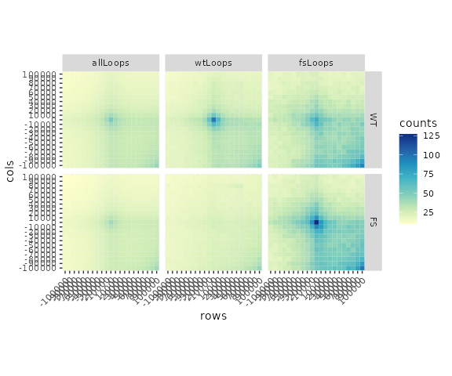

differential_loop_calling.RmdIn this vignette, we demonstrate the workflow for finding and visualizing differential loops between two biological conditions using the hictoolsr, DESeq2, and plotgardener packages. First, data pre-processing is required to obtain .hic files for each biological replicate and condition along with looping interactions. Loops are then merged between conditions and interaction frequency counts are extracted between loop anchors for each condition and replicate. Differential loops can then be called with DESeq2 and the results can be visualized as aggregate peak analysis (APA) plots.
As an example, we will use data from the paper, “Phase separation drives aberrant chromatin looping and cancer development”, by Ahn et al. 2021 using GEO links GSE143465 and GSE143465. This paper explores the oncogenic mechanism of a rare fusion protein in acute myeloid leukemia (AML). The fusion protein, NUP98-HOXA9 (NHA9), contains a DNA-binding domain fused to an intrisically disordered region (IDR) which forms phase-separated condensates and leads to changes in 3D chromatin structure and deregulated gene expression. To explore how phase separation leads to changes in chromatin structure the IDR of NHA9 was made incapable of phase separation by mutating phenylalanine (F) amino acid residues to serines (S), then expressed in HEK293T cells (FS mutant) along with the wildtype (WT). Hi-C, ChIP-seq, and RNA-seq was performed in both WT and FS cell lines to compare chromatin structure, NHA9 binding, and gene expression in response to phase separation.
Here, we demonstrate how to find differential loops between the WT and FS biological conditions and visualize the results with aggregate peak analysis plots.
Before we can find differential loops, we must first process raw .fastq files into .hic files and identify significant looping interactions. These are pre-processing steps that are conducted outside of hictoolsr. The following sections outline how to process and call loops from Hi-C data using available tools.
dietJuicer
Raw Hi-C fastqs can be converted into .hic format using the dietJuicer pipeline. The data should be processed at two levels:
.hic files for each. This is necessary for count extraction used as input to DESeq. Note the exception that sequencing replicates should always be merged, even for count extraction. Follow the directions under the dietJuicerCore workflow to process these samples..hic file. These .hic files are used as input for loop calling. Follow the directions under the dietJuicerMerge workflow to create merged .hic maps.After creating merged .hic files with dietJucierMerge, SIP (Significant Interaction Peak caller) can be used to identify looping interactions.
Usage:
java -jar SIP_HiC.jar hic <hicFile> <chrSizeFile> <Output> <juicerToolsPath> [options]
Example (submitting job to UNC’s longleaf cluster):
sbatch -p general -t 4320 --mem=8G --wrap="java -jar /proj/phanstiel_lab/software/SIP/SIP_HiC_v1.6.1.jar hic /path/to/file.hic /proj/phanstiel_lab/software/resources/hg19_chromSizes_filt.txt /path/to/output/directory /proj/phanstiel_lab/software/juicer/scripts/juicer_tools.jar -g 2.0 -t 2000 -fdr 0.05"Another loop caller, HiCCUPS, was used to call loops in the data at GSE143465 from Ahn et al. 2021. Since merging functions in hictoolsr require columns that are only generated through SIP, loops called with SIP are included as example data in hictoolsr.
We called loops in both conditions to identify loops that are unique to each dataset. However, there are often duplicate loops that are present in both datasets. It is important to merge these together to avoid testing duplicate loops and to catch all unique loops. The mergeBedpe() function does this, using DBSCAN to combine duplicate loops that are shifted slightly between conditions.
## Load packages
library(hictoolsr)
library(dbscan)
## Define WT and FS loop file paths
wt_loops <- system.file("extdata/WT_5kbLoops.txt", package = "hictoolsr")
fs_loops <- system.file("extdata/FS_5kbLoops.txt", package = "hictoolsr")
## Merge loops and convert to GInteractions
loops <-
mergeBedpe(bedpeFiles = c(wt_loops, fs_loops), res = 10e3) |>
as_ginteractions()
head(loops)
#> GInteractions object with 6 interactions and 11 metadata columns:
#> seqnames1 ranges1 seqnames2 ranges2 | color
#> <Rle> <IRanges> <Rle> <IRanges> | <character>
#> [1] chr1 950000-960000 --- chr1 990000-1000000 | 0,0,0
#> [2] chr1 2070000-2080000 --- chr1 2100000-2110000 | 0,0,0
#> [3] chr1 2120000-2130000 --- chr1 2310000-2320000 | 0,0,0
#> [4] chr1 2260000-2270000 --- chr1 2290000-2300000 | 0,0,0
#> [5] chr1 2340000-2350000 --- chr1 3340000-3350000 | 0,0,0
#> [6] chr1 2340000-2350000 --- chr1 2470000-2480000 | 0,0,0
#> APScoreAvg ProbabilityofEnrichment RegAPScoreAvg Avg_diffMaxNeihgboor_1
#> <numeric> <numeric> <numeric> <numeric>
#> [1] 1.94235 0.955674 1.44411 0.589269
#> [2] 2.22286 0.948697 1.33797 1.119236
#> [3] 4.83488 0.997847 2.97869 1.586035
#> [4] 1.73253 0.909439 1.44687 0.330902
#> [5] 3.99551 0.999175 2.19222 2.815012
#> [6] 4.23943 0.992896 2.28334 1.707992
#> Avg_diffMaxNeihgboor_2 avg std value source
#> <numeric> <numeric> <numeric> <numeric> <character>
#> [1] 0.954486 2.59272 0.304534 3.11651 FS_5kbLoops.txt
#> [2] 1.287945 1.97545 0.448767 2.97032 FS_5kbLoops.txt
#> [3] 2.891005 4.73156 0.728192 6.14136 WT_5kbLoops.txt
#> [4] 0.453355 2.10784 0.226152 2.40198 FS_5kbLoops.txt
#> [5] 3.599903 4.59845 1.451103 7.10069 WT_5kbLoops.txt
#> [6] 2.712936 3.42938 0.834681 4.94759 WT_5kbLoops.txt
#> cluster
#> <integer>
#> [1] 0
#> [2] 0
#> [3] 167
#> [4] 0
#> [5] 0
#> [6] 0
#> -------
#> regions: 22952 ranges and 0 metadata columns
#> seqinfo: 23 sequences from an unspecified genome; no seqlengthsDESeq2 requires a counts table from replicate .hic files to call differential loops. The code below shows how to extract these counts remotely using the GEO links to each replicate .hic file. Alternatively, these files can be downloaded and the paths to each file can be supplied (recommended due to internet instability).
## Hi-C file paths from GEO
hicFiles <-
c("https://ftp.ncbi.nlm.nih.gov/geo/samples/GSM4259nnn/GSM4259896/suppl/GSM4259896_HEK_HiC_NUP_IDR_WT_A9_1_1_inter_30.hic",
"https://ftp.ncbi.nlm.nih.gov/geo/samples/GSM4259nnn/GSM4259897/suppl/GSM4259897_HEK_HiC_NUP_IDR_WT_A9_1_2_inter_30.hic",
"https://ftp.ncbi.nlm.nih.gov/geo/samples/GSM4259nnn/GSM4259898/suppl/GSM4259898_HEK_HiC_NUP_IDR_WT_A9_2_1_inter_30.hic",
"https://ftp.ncbi.nlm.nih.gov/geo/samples/GSM4259nnn/GSM4259899/suppl/GSM4259899_HEK_HiC_NUP_IDR_WT_A9_2_2_inter_30.hic",
"https://ftp.ncbi.nlm.nih.gov/geo/samples/GSM4259nnn/GSM4259900/suppl/GSM4259900_HEK_HiC_NUP_IDR_FS_A9_1_1_inter_30.hic",
"https://ftp.ncbi.nlm.nih.gov/geo/samples/GSM4259nnn/GSM4259901/suppl/GSM4259901_HEK_HiC_NUP_IDR_FS_A9_1_2_inter_30.hic",
"https://ftp.ncbi.nlm.nih.gov/geo/samples/GSM4259nnn/GSM4259902/suppl/GSM4259902_HEK_HiC_NUP_IDR_FS_A9_2_1_inter_30.hic",
"https://ftp.ncbi.nlm.nih.gov/geo/samples/GSM4259nnn/GSM4259903/suppl/GSM4259903_HEK_HiC_NUP_IDR_FS_A9_2_2_inter_30.hic")
## Extract Hi-C counts between loop pixels
loopCounts <- extractCounts(bedpe = loops,
hic = hicFiles,
chroms = c(1:22, "X"),
res = 10e3,
norm = 'NONE',
matrix = 'observed')Since extracting counts can take some time, an example dataset has been packaged with pre-extracted counts for the code shown above.
data("loopCounts")Extract counts takes the basename of the filepath that is supplied as the column. Lets simplify the column names:
## Load package
library(InteractionSet)
## Simplify column names
colnames(mcols(loopCounts)) <-
gsub(pattern = "GSM.*_IDR_(WT|FS)_A9_(1|2)_(1|2)_.*",
replacement = "\\1_\\2_\\3",
x = colnames(mcols(loopCounts)))
head(loopCounts)
#> GInteractions object with 6 interactions and 19 metadata columns:
#> seqnames1 ranges1 seqnames2 ranges2 | color
#> <Rle> <IRanges> <Rle> <IRanges> | <character>
#> [1] chr1 950000-960000 --- chr1 990000-1000000 | 0,0,0
#> [2] chr1 2070000-2080000 --- chr1 2100000-2110000 | 0,0,0
#> [3] chr1 2120000-2130000 --- chr1 2310000-2320000 | 0,0,0
#> [4] chr1 2260000-2270000 --- chr1 2290000-2300000 | 0,0,0
#> [5] chr1 2340000-2350000 --- chr1 3340000-3350000 | 0,0,0
#> [6] chr1 2340000-2350000 --- chr1 2470000-2480000 | 0,0,0
#> APScoreAvg ProbabilityofEnrichment RegAPScoreAvg Avg_diffMaxNeihgboor_1
#> <numeric> <numeric> <numeric> <numeric>
#> [1] 1.94235 0.955674 1.44411 0.589269
#> [2] 2.22286 0.948697 1.33797 1.119236
#> [3] 4.83488 0.997847 2.97869 1.586035
#> [4] 1.73253 0.909439 1.44687 0.330902
#> [5] 3.99551 0.999175 2.19222 2.815012
#> [6] 4.23943 0.992896 2.28334 1.707992
#> Avg_diffMaxNeihgboor_2 avg std value source
#> <numeric> <numeric> <numeric> <numeric> <character>
#> [1] 0.954486 2.59272 0.304534 3.11651 FS_5kbLoops.txt
#> [2] 1.287945 1.97545 0.448767 2.97032 FS_5kbLoops.txt
#> [3] 2.891005 4.73156 0.728192 6.14136 WT_5kbLoops.txt
#> [4] 0.453355 2.10784 0.226152 2.40198 FS_5kbLoops.txt
#> [5] 3.599903 4.59845 1.451103 7.10069 WT_5kbLoops.txt
#> [6] 2.712936 3.42938 0.834681 4.94759 WT_5kbLoops.txt
#> cluster WT_1_1 WT_1_2 WT_2_1 WT_2_2 FS_1_1 FS_1_2
#> <integer> <numeric> <numeric> <numeric> <numeric> <numeric> <numeric>
#> [1] 0 63 56 38 58 55 65
#> [2] 0 56 59 33 45 50 60
#> [3] 167 37 35 29 39 34 25
#> [4] 0 27 40 49 40 49 52
#> [5] 0 15 13 15 14 4 5
#> [6] 0 25 34 34 35 25 32
#> FS_2_1 FS_2_2
#> <numeric> <numeric>
#> [1] 57 66
#> [2] 49 72
#> [3] 30 43
#> [4] 50 56
#> [5] 6 3
#> [6] 29 36
#> -------
#> regions: 22952 ranges and 0 metadata columns
#> seqinfo: 23 sequences from an unspecified genome; no seqlengthsThe following code demonstrates how to call differential loops with DESeq2 using the loopCounts object created above. First we isolate the count matrix from loop counts:
## Load package
library(DESeq2)
## Isolate count matrix
cnts <-
mcols(loopCounts)[grep("WT|FS", colnames(mcols(loopCounts)))] |>
as.matrix()
head(cnts)
#> WT_1_1 WT_1_2 WT_2_1 WT_2_2 FS_1_1 FS_1_2 FS_2_1 FS_2_2
#> [1,] 63 56 38 58 55 65 57 66
#> [2,] 56 59 33 45 50 60 49 72
#> [3,] 37 35 29 39 34 25 30 43
#> [4,] 27 40 49 40 49 52 50 56
#> [5,] 15 13 15 14 4 5 6 3
#> [6,] 25 34 34 35 25 32 29 36Then we create column data using the column names from the counts matrix:
## Create colData from column names
colData <-
do.call(rbind, strsplit(x = colnames(cnts), split = "_")) |>
as.data.frame(stringsAsFactors = TRUE) |>
`colnames<-`(value = c("condition", "biorep", "techrep"))
colData
#> condition biorep techrep
#> 1 WT 1 1
#> 2 WT 1 2
#> 3 WT 2 1
#> 4 WT 2 2
#> 5 FS 1 1
#> 6 FS 1 2
#> 7 FS 2 1
#> 8 FS 2 2Next we can build a DESeq data set and compare differential loops between the “WT” and “FS” conditions:
## Build DESeq data set
dds <-
DESeqDataSetFromMatrix(countData = cnts,
colData = colData,
design = ~techrep + biorep + condition)
#> converting counts to integer mode
## Run DEseq analysis
res <-
DESeq(dds) |>
lfcShrink(coef = "condition_WT_vs_FS", type="apeglm")
#> estimating size factors
#> estimating dispersions
#> gene-wise dispersion estimates
#> mean-dispersion relationship
#> final dispersion estimates
#> fitting model and testing
#> using 'apeglm' for LFC shrinkage. If used in published research, please cite:
#> Zhu, A., Ibrahim, J.G., Love, M.I. (2018) Heavy-tailed prior distributions for
#> sequence count data: removing the noise and preserving large differences.
#> Bioinformatics. https://doi.org/10.1093/bioinformatics/bty895
summary(res)
#>
#> out of 15479 with nonzero total read count
#> adjusted p-value < 0.1
#> LFC > 0 (up) : 489, 3.2%
#> LFC < 0 (down) : 224, 1.4%
#> outliers [1] : 0, 0%
#> low counts [2] : 0, 0%
#> (mean count < 1)
#> [1] see 'cooksCutoff' argument of ?results
#> [2] see 'independentFiltering' argument of ?resultsWe can explore the differential results with an MA-plot:
plotMA(res)or a PCA plot:
Let’s add the differential output from DESeq2 back to our loopCounts object, then separate WT-specific and FS-specific loops use a BH-adjusted pvalue of 0.01 and log2FoldChange above or below 0:
## Attach DESeq2 results
mcols(loopCounts) <- cbind(mcols(loopCounts), res)
## Separate WT/FS-specific loops
wtLoops <- loopCounts[loopCounts$padj <= 0.01 &
loopCounts$log2FoldChange > 0]
fsLoops <- loopCounts[loopCounts$padj <= 0.01 &
loopCounts$log2FoldChange < 0]
summary(wtLoops)
#> [1] "GInteractions object of length 214 with 24 metadata columns"
summary(fsLoops)
#> [1] "GInteractions object of length 47 with 24 metadata columns"Now that we have identified differential loops between “WT” and “FS” conditions we can perform an aggregate (or average) peak analysis (APA) to visualize the quality of loop calls. APAs are pileup plots of contact frequency matrices from Hi-C data surrounding the central loop pixels.
APAs extract and aggregate matrices around a Hi-C pixel at a given resolution (res) and number of pixels in either direction (buffer). For example, if you want to extract a 21x21 matrix at 10-kb resolution you should set res = 10e3 and buffer = 10. “Short” interactions that are too close to the diagonal must be filtered out to avoid aggregation errors. The filterBedpe() function calculates which interactions would intersect the diagonal and filters them out. In the code below, we assemble our loop categories into a list and apply this filtering for a resolution of 10-kb and a buffer of 10:
## Assemble all, WT, and FS loops into a list
loopList <-
list(allLoops = loopCounts,
wtLoops = wtLoops,
fsLoops = fsLoops)
## Define resolution and buffer (pixels from center)
res <- 10e3
buffer <- 10
## Filter out short loop interactions
filteredLoops <-
lapply(X = loopList,
FUN = filterBedpe,
res = res,
buffer = buffer) |>
`names<-`(value = names(loopList))
lapply(filteredLoops, summary)
#> $allLoops
#> [1] "GInteractions object of length 10530 with 24 metadata columns"
#>
#> $wtLoops
#> [1] "GInteractions object of length 110 with 24 metadata columns"
#>
#> $fsLoops
#> [1] "GInteractions object of length 13 with 24 metadata columns"You will notice that many of these interactions are close to the diagonal and are filtered out. The next block of code demonstrates how to apply the calcApa() function to the list of filtered loops to extract and aggregate counts from the replicate-merged Hi-C files of the “WT” and “FS” conditions:
## Hi-C file paths from GEO
wtHicPath <- "https://ftp.ncbi.nlm.nih.gov/geo/series/GSE143nnn/GSE143465/suppl/GSE143465_HEK_HiC_NUP_IDR_WT_A9_megaMap_inter_30.hic"
fsHicPath <- "https://ftp.ncbi.nlm.nih.gov/geo/series/GSE143nnn/GSE143465/suppl/GSE143465_HEK_HiC_NUP_IDR_FS_A9_megaMap_inter_30.hic"
## Calculate APA matrices for loops from WT Hi-C data
loopApaWtHic <-
lapply(X = filteredLoops,
FUN = calcApa,
hic = wtHicPath,
norm = "KR",
buffer = buffer)
## Calculate APA matrices for loops from FS Hi-C data
loopApaFsHic <-
lapply(X = filteredLoops,
FUN = calcApa,
hic = fsHicPath,
norm = "KR",
buffer = buffer)Since calculating the APA matrices can take some time, an example dataset has been packaged with pre-computed APA matrices for the code shown above.
data("loopApaWtHic")
data("loopApaFsHic")
lapply(loopApaWtHic, dim)
#> $allLoops
#> [1] 21 21
#>
#> $wtLoops
#> [1] 21 21
#>
#> $fsLoops
#> [1] 21 21
lapply(loopApaFsHic, dim)
#> $allLoops
#> [1] 21 21
#>
#> $wtLoops
#> [1] 21 21
#>
#> $fsLoops
#> [1] 21 21The last step before visualizing these matrices is to normalize the summed values to the number of loops in each category so that the interpretation becomes the average signal per loop. This will also put the plots on a similar scale for visualizing together.
ggplot2
To visualize the results in ggplot2 we must first convert the matrix to long format.
## Convert matrix to long-format
long <-
loopApaWtHic$allLoops |>
as.table() |>
as.data.frame() |>
setNames(c('rows', 'cols', 'counts'))
## Visualize with ggplot2
library(ggplot2)
ggplot(data = long,
mapping = aes(x = rows, y = cols, fill = counts)) +
scale_fill_distiller(palette = 'YlGnBu', direction = 1) +
geom_tile() +
theme(aspect.ratio=1, axis.text.x = element_text(angle = 45, hjust=1))Notice that we can flip the matrix by using rev() on either the rows or columns to change the orientation of the Hi-C diagonal:
## Flip the matrix
library(ggplot2)
ggplot(data = long,
mapping = aes(x = rev(rows), y = cols, fill = counts)) +
scale_fill_distiller(palette = 'YlGnBu', direction = 1) +
geom_tile() +
theme(aspect.ratio=1, , axis.text.x = element_text(angle = 45, hjust=1))We can apply this to all matrices in our list and combine the datasets into a “tidy” data form for visualizing with ggplot2:
## Define function to convert a matrix to long format
toLong <- \(x) {
x |>
as.table() |>
as.data.frame() |>
setNames(c('rows', 'cols', 'counts'))
}
## Apply function to convert all matrices to long format
apas <- list(WT = lapply(loopApaWtHic, toLong),
FS = lapply(loopApaFsHic, toLong))
## Add loopType to each data.frame and combine
apas <- lapply(apas, \(x) do.call(rbind, Map(cbind, x, loopType = names(x))))
## Add hicMap to each data.frame and combine
apas <- do.call(rbind, Map(cbind, apas, hicMap = names(apas)))
## Reorder factors
apas$loopType <- factor(x = apas$loopType,
levels = c("allLoops", "wtLoops", "fsLoops"))
apas$hicMap <- factor(x = apas$hicMap,
levels = c("WT", "FS"))
## Visualize with ggplot2
library(ggplot2)
ggplot(data = apas,
mapping = aes(x = rows, y = cols, fill = counts)) +
scale_fill_distiller(palette = 'YlGnBu', direction = 1) +
facet_grid(hicMap~loopType, scales = "free") +
geom_tile() +
theme(aspect.ratio=1, axis.text.x = element_text(angle = 45, hjust=1))
plotgardener
plotgardener is a genomics plotting package that allows for more flexibility than ggplot2. As part of the plotgardener ecosystem, hictoolsr provides a plotApa() function that is compatible with other plotgardener functions. Additionally, plotApa() can works on matrices and doesn’t first require converting to long-format.
Here is an example of quickly visualizing with plotApa() using a palette from RColorBrewer:
library(RColorBrewer)
plotApa(apa = loopApaWtHic$allLoops,
palette = colorRampPalette(brewer.pal(9, 'YlGnBu')))
#> APA[APA1]By supplying positional information (e.g. x, y, width, height, etc…) plotgardener will switch to multi-figure mode and allow multiple plot arrangements on a pgPage. Let’s visualize all APA results using functions from hictoolsr and plotgardener:
library(plotgardener)
library(purrr)
## Initiate plotgardener page
pageCreate(width = 4.25, height = 3)
## Define shared parameters
p <- pgParams(x = 0.5,
y = 0.5,
width = 1,
height = 1,
space = 0.075,
zrange = c(0, max(unlist(c(loopApaWtHic, loopApaFsHic)))),
palette = colorRampPalette(brewer.pal(9, 'YlGnBu')))
## Define grid of coordinate positions
xpos <- c(p$x, p$x + p$width + p$space, p$x + (p$width + p$space)*2)
ypos <- c(p$y, p$y + p$height + p$space, p$y + (p$height + p$space)*2)
## Plot row of WT APAs
wt_plots <-
pmap(list(loopApaWtHic, xpos, ypos[1]), \(a, x, y) {
plotApa(params = p, apa = a, x = x, y = y)
})
## Plot row of FS APAs
fs_plots <-
pmap(list(loopApaFsHic, xpos, ypos[2]), \(a, x, y) {
plotApa(params = p, apa = a, x = x, y = y)
})
## Add legend
annoHeatmapLegend(plot = wt_plots[[1]],
x = p$x + (p$width + p$space)*3,
y = ypos[1],
width = p$space,
height = p$height*0.75,
fontcolor = 'black')
## Add text labels
plotText(label = c("All loops", "WT loops", "FS loops"),
x = xpos + p$width / 2,
y = ypos[1] - p$space,
just = c('center', 'bottom'))
plotText(label = c("WT", "FS"),
x = xpos[1] - p$space,
y = ypos[1:2] + p$height / 2,
rot = 90,
just = c('center', 'bottom'))
## Remove Guides
pageGuideHide()As you can see, in some ways plotgardener can be more verbose, but this comes with the added flexibility to specificy exactly where and how you would like to visualize your genomic data. Just remember, with freedom comes great responsibility!
sessionInfo()
#> R version 4.1.1 (2021-08-10)
#> Platform: x86_64-pc-linux-gnu (64-bit)
#> Running under: Ubuntu 20.04.3 LTS
#>
#> Matrix products: default
#> BLAS/LAPACK: /usr/lib/x86_64-linux-gnu/openblas-pthread/libopenblasp-r0.3.8.so
#>
#> locale:
#> [1] LC_CTYPE=en_US.UTF-8 LC_NUMERIC=C
#> [3] LC_TIME=en_US.UTF-8 LC_COLLATE=en_US.UTF-8
#> [5] LC_MONETARY=en_US.UTF-8 LC_MESSAGES=C
#> [7] LC_PAPER=en_US.UTF-8 LC_NAME=C
#> [9] LC_ADDRESS=C LC_TELEPHONE=C
#> [11] LC_MEASUREMENT=en_US.UTF-8 LC_IDENTIFICATION=C
#>
#> attached base packages:
#> [1] parallel stats4 stats graphics grDevices utils datasets
#> [8] methods base
#>
#> other attached packages:
#> [1] purrr_0.3.4 plotgardener_1.2.9
#> [3] RColorBrewer_1.1-3 ggplot2_3.3.6
#> [5] DESeq2_1.32.0 InteractionSet_1.20.0
#> [7] SummarizedExperiment_1.22.0 Biobase_2.52.0
#> [9] MatrixGenerics_1.4.3 matrixStats_0.62.0
#> [11] GenomicRanges_1.44.0 GenomeInfoDb_1.28.4
#> [13] IRanges_2.26.0 S4Vectors_0.30.2
#> [15] BiocGenerics_0.38.0 dbscan_1.1-10
#> [17] hictoolsr_1.0.1
#>
#> loaded via a namespace (and not attached):
#> [1] colorspace_2.0-3 rjson_0.2.21 rprojroot_2.0.3
#> [4] XVector_0.32.0 fs_1.5.2 farver_2.1.1
#> [7] bit64_4.0.5 mvtnorm_1.1-3 AnnotationDbi_1.54.1
#> [10] fansi_1.0.3 apeglm_1.14.0 splines_4.1.1
#> [13] cachem_1.0.6 geneplotter_1.70.0 knitr_1.39
#> [16] jsonlite_1.8.0 Rsamtools_2.8.0 annotate_1.70.0
#> [19] png_0.1-7 compiler_4.1.1 httr_1.4.3
#> [22] assertthat_0.2.1 Matrix_1.4-1 fastmap_1.1.0
#> [25] cli_3.3.0 htmltools_0.5.3 tools_4.1.1
#> [28] coda_0.19-4 gtable_0.3.0 glue_1.6.2
#> [31] GenomeInfoDbData_1.2.6 reshape2_1.4.4 dplyr_1.0.9
#> [34] Rcpp_1.0.9 bbmle_1.0.25 jquerylib_0.1.4
#> [37] pkgdown_2.0.6 vctrs_0.4.1 Biostrings_2.60.2
#> [40] strawr_0.0.9 rtracklayer_1.52.1 xfun_0.31
#> [43] stringr_1.4.0 plyranges_1.12.1 lifecycle_1.0.1
#> [46] restfulr_0.0.15 XML_3.99-0.10 zlibbioc_1.38.0
#> [49] MASS_7.3-58 scales_1.2.0 ragg_1.2.2
#> [52] yaml_2.3.5 curl_4.3.2 memoise_2.0.1
#> [55] emdbook_1.3.12 yulab.utils_0.0.5 sass_0.4.2
#> [58] bdsmatrix_1.3-6 stringi_1.7.8 RSQLite_2.2.15
#> [61] highr_0.9 genefilter_1.74.1 BiocIO_1.2.0
#> [64] desc_1.4.1 BiocParallel_1.26.2 rlang_1.0.4
#> [67] pkgconfig_2.0.3 systemfonts_1.0.4 bitops_1.0-7
#> [70] evaluate_0.15 lattice_0.20-45 labeling_0.4.2
#> [73] GenomicAlignments_1.28.0 bit_4.0.4 tidyselect_1.1.2
#> [76] plyr_1.8.7 magrittr_2.0.3 R6_2.5.1
#> [79] generics_0.1.3 DelayedArray_0.18.0 DBI_1.1.3
#> [82] withr_2.5.0 pillar_1.8.0 survival_3.3-1
#> [85] KEGGREST_1.32.0 RCurl_1.98-1.8 tibble_3.1.8
#> [88] crayon_1.5.1 utf8_1.2.2 rmarkdown_2.14
#> [91] locfit_1.5-9.6 grid_4.1.1 data.table_1.14.2
#> [94] blob_1.2.3 digest_0.6.29 xtable_1.8-4
#> [97] tidyr_1.2.0 numDeriv_2016.8-1.1 gridGraphics_0.5-1
#> [100] textshaping_0.3.6 munsell_0.5.0 ggplotify_0.1.0
#> [103] bslib_0.4.0